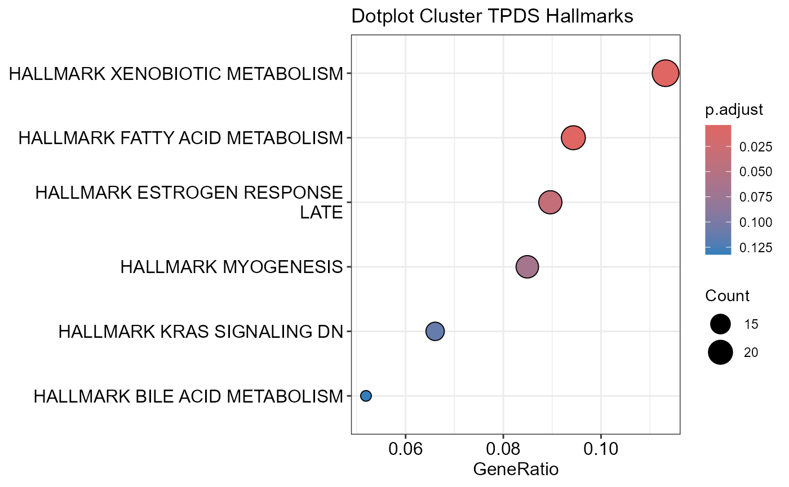

SiRCleR Tutorial
Ariane Mora
Christina Schmidt
DataAnalysisExample.RmdInstallation
The latest development version of SiRCleR package can be install from GitHub with:
Run SiRCleR functions
Regulatory Clustering Model (RCM)
Here we perform the SiRCle clustering using DNA-methylation, RNAseq
and proteomics data and hence we use the function
sircleRCM_MRP(), with MRP referring to
DNA-Methylation,
RNAseq and
Proteomics.
If you have different column names for Log2FC and p.adjusted value
and/or want to use different cutoffs you will have to change parameters
from default. Please check out vignette on how to choose the settings ChooseSettings
including the Background Method,
input data thresholds and Regulation Grouping
if anything is unclear.
SiRCleR::sircleRCM_MRP(methFile=DNAmeth,
rnaFile=mRNA,
protFile=Proteomics,
geneID="gene_name",
backgroundMethod="P|(M&R)",
OutputFileName = "Sircle_RCM_MRP")
In case you do not have DNA-methylation data, but only RNAseq and
proteomics data, you can use the function sircleRCM_RP(),
with RP referring to RNAseq and
Proteomics.
SiRCleR::sircleRCM_RP(rnaFile=mRNA,
protFile=Proteomics,
geneID="gene_name",
backgroundMethod="P&R",
OutputFileName = "Sircle_RCM_RP")Enrichment analysis on SiRCle clusters
Dependent on the prior knowledge you choose to provide you will
address different biological questions:
1. Gene-sets: If you are interested in the biological
processes or pathways that are altered in the SiRCle clusters, you can
use gene-sets such as KEGG(Kanehisa and Goto
2000) or Hallmarks(Liberzon et al.
2015) that can be found on platforms such as MSigDB.
2. TF-regulon: If you are interested in the
transcription factors that are driving the changes in the SiRCle
clusters, you can use the regulon information from platforms such as
DecoupleR
With the function sircleORA() you can perform Over
Representation Analysis (ORA) on each SiRCle cluster. Depending on the
prior knowledge provided via the parameter PriorKnowledge,
pathway enrichment analysis or transcription-factor activity estimation
will be performed.
Here we perform Over Presentation Analysis (ORA) on each SiRCle
clustser. This can be either done using the GO-terms signature for human
or mouse data or by providing a pathway file of choice.
Pathway enrichment analysis
The Hallmarks gene-set (Liberzon et al.
2015) was downloaded from MSigDB and is
available in the package SiRCle and can be loaded using the
function ToyData().
# Load a pathway file of interest:
Hallmarks <- SiRCleR::ToyData("Hallmarks")
# Run pathway enrichment analysis
SiRCleR::sircleORA(InputData=Sircle_RCM_MRP,
geneID= "geneID",
regLabels="RG3_Protein",
PriorKnowledge=Hallmarks,
PKName="Hallmarks",
minGSSize=5,
maxGSSize=1000 ,
Plot_p.adj=0.2,
Plot_Percentage=5,
OutputFileName='PathwayEnrichment')## Number of genes in None: 9497## ## Number of genes in TPDE: 551## Number of genes in TMDS: 944## Number of genes in MDE: 1487## Number of genes in MDS: 662## Number of genes in TPDS: 1001
## Number of genes in TMDE: 324Transcription factor analysis
TF-regulons can be found in different resources. We recommend to use ColleCTRI (Müller-Dott et al. 2023) that can be loaded via decoupleR (Badia-I-Mompel et al. 2022).
# Load TF regulon:
CollectriReg <- decoupleR::get_collectri(organism='human', split_complexes=FALSE)[,c(1:2)]%>%
dplyr::rename("term"="source",
"gene"="target")
CollectriReg$Description <- CollectriReg$term
write.csv(CollectriReg, paste("SiRCleRCM/TF-Regulon_decoupleR-get_collectri_",format(Sys.Date(), "%d.%m.%Y") ,".csv", sep=""))#It is always recommended to save the prior knwoeldge that was used in your analysis
# Run transcription factor enrichment analysis
SiRCleR::sircleORA(InputData=Sircle_RCM_MRP,
geneID= "geneID",
regLabels="RG3_Protein",
PriorKnowledge=CollectriReg,
PKName="CollectriReg",
minGSSize=5,
maxGSSize=1000 ,
Plot_p.adj=0.2,
Plot_Percentage=15,
OutputFileName='TFActivity')## Number of genes in None: 9497## No terms made the thresholds set for None## Number of genes in TPDE: 551## Number of genes in TMDS: 944## Number of genes in MDE: 1487## Emapplot not plotted for MDE due to too many terms## Number of genes in MDS: 662## Number of genes in TPDS: 1001## Number of genes in TMDE: 324Session information
## ─ Session info ───────────────────────────────────────────────────────────────────────────────────────────────────────
## setting value
## version R version 4.4.1 (2024-06-14 ucrt)
## os Windows 10 x64 (build 19045)
## system x86_64, mingw32
## ui RTerm
## language en
## collate English_United Kingdom.utf8
## ctype English_United Kingdom.utf8
## tz Europe/Berlin
## date 2025-01-08
## pandoc 3.2 @ C:/Program Files/RStudio/resources/app/bin/quarto/bin/tools/ (via rmarkdown)
##
## ─ Packages ───────────────────────────────────────────────────────────────────────────────────────────────────────────
## package * version date (UTC) lib source
## AnnotationDbi 1.66.0 2024-05-01 [1] Bioconductor 3.19 (R 4.4.0)
## ape 5.8 2024-04-11 [1] CRAN (R 4.4.1)
## aplot 0.2.3 2024-06-17 [1] CRAN (R 4.4.1)
## backports 1.5.0 2024-05-23 [1] CRAN (R 4.4.0)
## Biobase 2.64.0 2024-05-01 [1] Bioconductor 3.19 (R 4.4.0)
## BiocGenerics 0.50.0 2024-05-01 [1] Bioconductor 3.19 (R 4.4.0)
## BiocParallel 1.38.0 2024-05-01 [1] Bioconductor 3.19 (R 4.4.0)
## Biostrings 2.72.1 2024-06-02 [1] Bioconductor 3.19 (R 4.4.0)
## bit 4.5.0 2024-09-20 [1] CRAN (R 4.4.1)
## bit64 4.5.2 2024-09-22 [1] CRAN (R 4.4.1)
## blob 1.2.4 2023-03-17 [1] CRAN (R 4.4.1)
## bslib 0.8.0 2024-07-29 [1] CRAN (R 4.4.1)
## cachem 1.1.0 2024-05-16 [1] CRAN (R 4.4.1)
## cellranger 1.1.0 2016-07-27 [1] CRAN (R 4.4.1)
## checkmate 2.3.2 2024-07-29 [1] CRAN (R 4.4.1)
## cli 3.6.3 2024-06-21 [1] CRAN (R 4.4.1)
## clusterProfiler 4.12.6 2024-08-25 [1] Bioconductor 3.19 (R 4.4.1)
## codetools 0.2-20 2024-03-31 [2] CRAN (R 4.4.1)
## colorspace 2.1-1 2024-07-26 [1] CRAN (R 4.4.1)
## cowplot 1.1.3 2024-01-22 [1] CRAN (R 4.4.1)
## crayon 1.5.3 2024-06-20 [1] CRAN (R 4.4.1)
## curl 5.2.3 2024-09-20 [1] CRAN (R 4.4.1)
## data.table 1.16.2 2024-10-10 [1] CRAN (R 4.4.2)
## DBI 1.2.3 2024-06-02 [1] CRAN (R 4.4.1)
## decoupleR 2.10.0 2024-06-16 [1] Bioconductor 3.19 (R 4.4.0)
## desc 1.4.3 2023-12-10 [1] CRAN (R 4.4.1)
## digest 0.6.37 2024-08-19 [1] CRAN (R 4.4.1)
## DOSE 3.30.5 2024-09-01 [1] Bioconductor 3.19 (R 4.4.1)
## dplyr * 1.1.4 2023-11-17 [1] CRAN (R 4.4.1)
## enrichplot 1.24.4 2024-09-01 [1] Bioconductor 3.19 (R 4.4.1)
## evaluate 1.0.1 2024-10-10 [1] CRAN (R 4.4.2)
## farver 2.1.2 2024-05-13 [1] CRAN (R 4.4.1)
## fastmap 1.2.0 2024-05-15 [1] CRAN (R 4.4.1)
## fastmatch 1.1-4 2023-08-18 [1] CRAN (R 4.4.0)
## fgsea 1.33.1 2024-12-19 [1] Github (ctlab/fgsea@da4b3b8)
## forcats * 1.0.0 2023-01-29 [1] CRAN (R 4.4.1)
## fs 1.6.4 2024-04-25 [1] CRAN (R 4.4.1)
## generics 0.1.3 2022-07-05 [1] CRAN (R 4.4.1)
## GenomeInfoDb 1.40.1 2024-06-16 [1] Bioconductor 3.19 (R 4.4.0)
## GenomeInfoDbData 1.2.12 2024-09-27 [1] Bioconductor
## ggforce 0.4.2 2024-02-19 [1] CRAN (R 4.4.1)
## ggfun 0.1.7 2024-10-24 [1] CRAN (R 4.4.2)
## ggnewscale 0.5.0 2024-07-19 [1] CRAN (R 4.4.1)
## ggplot2 * 3.5.1 2024-04-23 [1] CRAN (R 4.4.1)
## ggplotify 0.1.2 2023-08-09 [1] CRAN (R 4.4.1)
## ggraph 2.2.1 2024-03-07 [1] CRAN (R 4.4.1)
## ggrepel 0.9.6 2024-09-07 [1] CRAN (R 4.4.1)
## ggtree 3.12.0 2024-05-01 [1] Bioconductor 3.19 (R 4.4.0)
## glue 1.7.0 2024-01-09 [1] CRAN (R 4.4.1)
## GO.db 3.19.1 2024-09-27 [1] Bioconductor
## GOSemSim 2.30.2 2024-08-21 [1] Bioconductor 3.19 (R 4.4.1)
## graphlayouts 1.2.0 2024-09-24 [1] CRAN (R 4.4.1)
## gridExtra 2.3 2017-09-09 [1] CRAN (R 4.4.1)
## gridGraphics 0.5-1 2020-12-13 [1] CRAN (R 4.4.1)
## gson 0.1.0 2023-03-07 [1] CRAN (R 4.4.1)
## gtable 0.3.6 2024-10-25 [1] CRAN (R 4.4.2)
## hms 1.1.3 2023-03-21 [1] CRAN (R 4.4.1)
## htmltools 0.5.8.1 2024-04-04 [1] CRAN (R 4.4.1)
## htmlwidgets 1.6.4 2023-12-06 [1] CRAN (R 4.4.1)
## httr 1.4.7 2023-08-15 [1] CRAN (R 4.4.1)
## httr2 1.0.5 2024-09-26 [1] CRAN (R 4.4.1)
## igraph 2.1.1 2024-10-19 [1] CRAN (R 4.4.2)
## IRanges 2.38.1 2024-07-03 [1] Bioconductor 3.19 (R 4.4.1)
## jquerylib 0.1.4 2021-04-26 [1] CRAN (R 4.4.1)
## jsonlite 1.8.9 2024-09-20 [1] CRAN (R 4.4.1)
## KEGGREST 1.44.1 2024-06-19 [1] Bioconductor 3.19 (R 4.4.0)
## knitr 1.49 2024-11-08 [1] CRAN (R 4.4.2)
## labeling 0.4.3 2023-08-29 [1] CRAN (R 4.4.0)
## later 1.3.2 2023-12-06 [1] CRAN (R 4.4.1)
## lattice 0.22-6 2024-03-20 [2] CRAN (R 4.4.1)
## lazyeval 0.2.2 2019-03-15 [1] CRAN (R 4.4.1)
## lifecycle 1.0.4 2023-11-07 [1] CRAN (R 4.4.1)
## logger 0.4.0 2024-10-22 [1] CRAN (R 4.4.2)
## lubridate * 1.9.3 2023-09-27 [1] CRAN (R 4.4.1)
## magrittr 2.0.3 2022-03-30 [1] CRAN (R 4.4.1)
## MASS 7.3-60.2 2024-04-26 [2] CRAN (R 4.4.1)
## Matrix 1.7-0 2024-04-26 [2] CRAN (R 4.4.1)
## memoise 2.0.1 2021-11-26 [1] CRAN (R 4.4.1)
## munsell 0.5.1 2024-04-01 [1] CRAN (R 4.4.1)
## nlme 3.1-164 2023-11-27 [2] CRAN (R 4.4.1)
## OmnipathR 3.15.2 2024-12-13 [1] Bioconductor
## parallelly 1.38.0 2024-07-27 [1] CRAN (R 4.4.1)
## patchwork 1.3.0 2024-09-16 [1] CRAN (R 4.4.1)
## pillar 1.10.1 2025-01-07 [1] CRAN (R 4.4.1)
## pkgconfig 2.0.3 2019-09-22 [1] CRAN (R 4.4.1)
## pkgdown 2.1.1 2024-09-17 [1] CRAN (R 4.4.1)
## plyr 1.8.9 2023-10-02 [1] CRAN (R 4.4.1)
## png 0.1-8 2022-11-29 [1] CRAN (R 4.4.0)
## polyclip 1.10-7 2024-07-23 [1] CRAN (R 4.4.1)
## prettyunits 1.2.0 2023-09-24 [1] CRAN (R 4.4.1)
## progress 1.2.3 2023-12-06 [1] CRAN (R 4.4.1)
## purrr * 1.0.2 2023-08-10 [1] CRAN (R 4.4.1)
## qvalue 2.36.0 2024-05-01 [1] Bioconductor 3.19 (R 4.4.0)
## R.methodsS3 1.8.2 2022-06-13 [1] CRAN (R 4.4.0)
## R.oo 1.27.0 2024-11-01 [1] CRAN (R 4.4.1)
## R.utils 2.12.3 2023-11-18 [1] CRAN (R 4.4.1)
## R6 2.5.1 2021-08-19 [1] CRAN (R 4.4.1)
## ragg 1.3.3 2024-09-11 [1] CRAN (R 4.4.1)
## rappdirs 0.3.3 2021-01-31 [1] CRAN (R 4.4.1)
## RColorBrewer 1.1-3 2022-04-03 [1] CRAN (R 4.4.0)
## Rcpp 1.0.13 2024-07-17 [1] CRAN (R 4.4.1)
## readr * 2.1.5 2024-01-10 [1] CRAN (R 4.4.1)
## readxl 1.4.3 2023-07-06 [1] CRAN (R 4.4.1)
## reshape2 1.4.4 2020-04-09 [1] CRAN (R 4.4.1)
## rlang 1.1.4 2024-06-04 [1] CRAN (R 4.4.1)
## rmarkdown 2.29 2024-11-04 [1] CRAN (R 4.4.2)
## RSQLite 2.3.7 2024-05-27 [1] CRAN (R 4.4.1)
## rstudioapi 0.17.1 2024-10-22 [1] CRAN (R 4.4.2)
## rvest 1.0.4 2024-02-12 [1] CRAN (R 4.4.1)
## S4Vectors 0.42.1 2024-07-03 [1] Bioconductor 3.19 (R 4.4.1)
## sass 0.4.9 2024-03-15 [1] CRAN (R 4.4.1)
## scales 1.3.0 2023-11-28 [1] CRAN (R 4.4.1)
## scatterpie 0.2.4 2024-08-28 [1] CRAN (R 4.4.1)
## selectr 0.4-2 2019-11-20 [1] CRAN (R 4.4.1)
## sessioninfo 1.2.2 2021-12-06 [1] CRAN (R 4.4.1)
## shadowtext 0.1.4 2024-07-18 [1] CRAN (R 4.4.1)
## SiRCleR * 1.1.0 2025-01-08 [1] Github (ArianeMora/SiRCleR@ca82db8)
## stringi 1.8.4 2024-05-06 [1] CRAN (R 4.4.0)
## stringr * 1.5.1 2023-11-14 [1] CRAN (R 4.4.1)
## systemfonts 1.1.0 2024-05-15 [1] CRAN (R 4.4.1)
## textshaping 0.4.0 2024-05-24 [1] CRAN (R 4.4.1)
## tibble * 3.2.1 2023-03-20 [1] CRAN (R 4.4.1)
## tidygraph 1.3.1 2024-01-30 [1] CRAN (R 4.4.1)
## tidyr * 1.3.1 2024-01-24 [1] CRAN (R 4.4.1)
## tidyselect 1.2.1 2024-03-11 [1] CRAN (R 4.4.1)
## tidytree 0.4.6 2023-12-12 [1] CRAN (R 4.4.1)
## tidyverse * 2.0.0 2023-02-22 [1] CRAN (R 4.4.1)
## timechange 0.3.0 2024-01-18 [1] CRAN (R 4.4.1)
## treeio 1.28.0 2024-05-01 [1] Bioconductor 3.19 (R 4.4.0)
## tweenr 2.0.3 2024-02-26 [1] CRAN (R 4.4.1)
## tzdb 0.4.0 2023-05-12 [1] CRAN (R 4.4.1)
## UCSC.utils 1.0.0 2024-05-01 [1] Bioconductor 3.19 (R 4.4.0)
## vctrs 0.6.5 2023-12-01 [1] CRAN (R 4.4.1)
## viridis 0.6.5 2024-01-29 [1] CRAN (R 4.4.1)
## viridisLite 0.4.2 2023-05-02 [1] CRAN (R 4.4.1)
## vroom 1.6.5 2023-12-05 [1] CRAN (R 4.4.1)
## withr 3.0.2 2024-10-28 [1] CRAN (R 4.4.2)
## xfun 0.49 2024-10-31 [1] CRAN (R 4.4.2)
## XML 3.99-0.17 2024-06-25 [1] CRAN (R 4.4.1)
## xml2 1.3.6 2023-12-04 [1] CRAN (R 4.4.1)
## XVector 0.44.0 2024-05-01 [1] Bioconductor 3.19 (R 4.4.0)
## yaml 2.3.10 2024-07-26 [1] CRAN (R 4.4.1)
## yulab.utils 0.1.8 2024-11-07 [1] CRAN (R 4.4.2)
## zip 2.3.1 2024-01-27 [1] CRAN (R 4.4.1)
## zlibbioc 1.50.0 2024-05-01 [1] Bioconductor 3.19 (R 4.4.0)
##
## [1] C:/Users/chris/AppData/Local/R/win-library/4.4
## [2] C:/Program Files/R/R-4.4.1/library
##
## ──────────────────────────────────────────────────────────────────────────────────────────────────────────────────────